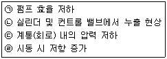

지게차유사(롤러,기중기등) (2013-10-12 기출문제)
1. 건설기계기관에서 사용되는 여과 장치가 아닌 것은?
- 공기청정기
- 오일 필터
- 오일 스트레이너
- 인젝션 타이머
(정답률: 80%)

2. 라디에이터 캡의 스프링이 파손 되었을 때 가장 먼저 나타나는 현상은?
- 냉각수 비등점이 낮아진다.
- 냉각수 순환이 불량해진다.
- 냉각수 순환이 빨라진다.
- 냉각수 비등점이 높아진다.
(정답률: 54%)
3. 디젤 기관을 정지시키는 방법으로 가장 적합한 것은?
- 연료공급을 차단한다.
- 초크밸브를 닫는다.
- 기어를 넣어 기관을 정지한다.
- 축전지를 분리시킨다.
(정답률: 74%)
4. 실린더 벽이 마멸되었을 때 발생 되는 현상은?
- 기관의 회전수가 증가한다.
- 오일 소모량이 증가한다.
- 열효율이 증가한다.
- 폭발압력이 증가한다.
(정답률: 83%)
5. 엔진오일 교환 후 압력이 높아졌다면 그 원인으로 가장 적절한 것은?
- 엔진오일 교환 시 냉각수가 혼입되었다.
- 오일의 점도가 낮은 것으로 교환하였다.
- 오일 회로 내 누설이 발생하였다.
- 오일 점도가 높은 것으로 교환하였다.
(정답률: 70%)
6. 고속 디젤기관의 장점으로 틀린 것은?
- 열효율이 가솔린 기관보다 높다.
- 인화점이 높은 경유를 사용하므로 취급이 용이하다.
- 가솔린 기관보다 최고 회전수가 빠르다.
- 연료 소비량이 가솔린 기관보다 적다.
(정답률: 59%)
7. 실린더헤드 등 면적이 넓은 부분에서 볼트를 조이는 방법으로 가장 적합한 것은?
- 규정 토크로 한 번에 조인다.
- 중심에서 외측을 향하여 대각선으로 조인다.
- 외측에서 중심을 향하여 대각선으로 조인다.
- 조이기 쉬운 곳부터 조인다.
(정답률: 68%)
8. 건설기계기관에 설치되는 오일 냉각기의 주 기능으로 맞는 것은?
- 오일 온도를 30℃ 이하로 유지하기 위한 기능을 한다.
- 오일 온도를 정상 온도로 일정하게 유지한다.
- 수분, 슬러지(sludge) 등을 제거한다.
- 오일의 암을 일정하게 유지한다.
(정답률: 72%)
9. 디젤엔진의 시동불량 원인과 관계가 없는 것은?
- 흡·배기 밸브의 밀착이 좋지 못할 때
- 압축 압력이 저하되었을 때
- 밸브의 개폐시기가 부정확할 때
- 점화 플러그가 젖어 있을 때
(정답률: 58%)
10. 엔진 과열의 원인이 아닌 것은?
- 히터 스위치 고장
- 헐거워진 냉각 팬 벨트
- 수온 조절기의 고장
- 물 통로 내의 물 때(scale)
(정답률: 65%)
11. 분사 노즐 시험기로 점검 할 수 있는 것은?
- 분사개시 압력과 분사 속도를 점검 할 수 있다.
- 분포상태와 플런저의 성능을 점검 할 수 있다.
- 분사개시 압력과 후적을 점검 할 수 있다.
- 분포상태와 분사량을 점검 할 수 있다.
(정답률: 40%)
12. 동력을 전달하는 계통의 순서를 바르게 나타낸 것은?
- 피스톤→커넥팅로드→클러치→크랭크축
- 피스톤→클러치→크랭크축→커넥팅로드
- 피스톤→크랭크축→커넥팅로드→클러치
- 피스톤→커넥팅로드→크랭크축→클러치
(정답률: 66%)
13. 건설기계장비의 중전장치는 어떤 발전기를 가장 많이 사용하고 있는가?
- 직류발전기
- 단상 교류발전기
- 3상 교류발전기
- 와전류 발전기
(정답률: 56%)
14. 예열 플러그의 사용시기로 가장 알맞은 것은?
- 냉각수의 양이 많을 때
- 기온이 영하로 떨어졌을 때
- 축전지가 방전 되었을 때
- 축전기가 과충전 되었을 때
(정답률: 73%)
15. 납산 축전지의 충·방전 상태를 나타낸 것이 아닌 것은?
- 축전지가 방전되면 양극판은 과산화납이 황산납으로 된다.
- 축전지가 방전되면 전해액은 묽은 황산이 물로 변하여 비중이 낮아진다.
- 축전지가 충전되면 음극판은 황산남이 해면상납으로 된다.
- 축전지가 충전되면 양극판에서 수소를, 음극판에서 산소를 발생시킨다.
(정답률: 45%)
16. 축전지의 양극과 음극 단자의 구별하는 방법으로 틀린 것은?
- 양극은 적색, 음극은 흑색이다.
- 양극 단자에 ＋, 음극 단자에는 -의 기호가 있다.
- 양극 단자에 Positive, 음극 단자에는 Negative 라고 표기 되었다.
- 양극 단자의 직경이 음극 단자의 직경보다 작다.
(정답률: 71%)
17. 전조등의 좌·우 램프 간 회로에 대한 설명으로 맞는 것은?
- 직렬 또는 병렬로 되어 있다.
- 병렬과 직렬로 되어 있다.
- 병렬로 되어 있다.
- 직렬로 되어 있다.
(정답률: 64%)
18. 기동 전동기의 전기자 축으로 부터 피니언 기어로는 동력이 전달되나 피니언 기어로부터 전기자 축으로는 동력이 전달되지 않도록 해주는 장치는?
- 오버헤드 가드
- 솔레노이드 스위치
- 시프트 칼라
- 오버러닝 클러치
(정답률: 40%)
19. 출발 시 클러치의 페달이 거의 끝부분에서 차량이 출발되는 원인으로 틀린 것은?
- 클러치 디스크 과대 마모
- 클러치 자유간극 조정 불량
- 클러치 케이블 불량
- 클러치 오일의 부족
(정답률: 44%)
20. 굴삭기의 붐 제어레버를 계속하여 상승위치로 당기고 있으며 다음 중 어느 곳에 가장 큰 손상이 발생하는가?
- 엔진
- 유압펌프
- 필리프 밸브 및 시트
- 유압모터
(정답률: 34%)
21. 조향핸들의 조작이 무거운 원인으로 틀린 것은?
- 유압유 부족 시
- 타이어 공기압 과다 주입 시
- 앞바퀴 휠 얼라이먼트 조절 불량 시
- 유압 계통 내의 공기 혼입 시
(정답률: 63%)
22. 굴삭기에서 그리스를 주입하지 않아도 되는 곳은?
- 버킷 핀
- 링키지
- 트랙 슈
- 선회 베어링
(정답률: 45%)
23. 모터 그레이더의 완충 기능을 하는 것은?
- 판 스프링
- 코일 스프링
- 공기 스프링
- 탠덤 드라이브
(정답률: 37%)
24. 유니버설 조인트 중에서 훅형(십자형) 조인트가 가장 많이 사용되는 이유가 아닌 것은?
- 구조가 간단하다.
- 급유가 불필요하다.
- 큰 동력의 전달이 가능하다.
- 작동이 확실하다.
(정답률: 58%)
25. 지게차로 가파른 경사지에서 적재물을 운반할 때에는 어떤 방법이 좋겠는가?
- 적재물을 앞으로 하여 천천히 내려온다.
- 기어의 변속을 중립에 놓고 내려온다.
- 기어의 변속을 저속상태로 놓고 후진으로 내려온다.
- 지그재그로 회전하여 내려온다.
(정답률: 79%)
26. 기중기의 드래그라인에서 드래그 로프를 드럼에 잘 감기도록 안내하는 것은?
- 시브
- 새들 블럭
- 라인 와인더
- 페어리드
(정답률: 39%)
27. 검사연기신청을 하였으나 불허 통지를 받은 자는 언제까지 검사를 신청하여야 하는가?
- 불허통지를 받은 날부터 5일 이내
- 불허통지를 받은 날부터 10일 이내
- 검사신청기간 만료일부터 5일 이내
- 검사신청기간 만료일부터 10일 이내
(정답률: 52%)
28. 건설기계조종사 면허증의 반납사유에 해당하지 않는 것은?
- 면허가 취소된 때
- 면허의 효력이 정지된 때
- 건설기계조종을 하지 않을 때
- 면허증의 재교부를 받은 후 잃어버린 면허증을 발견한 대
(정답률: 67%)
29. 다음 중 건설기계 대여업에 대한 설명이 틀린 것은?
- 일반건설기계 대여업은 5대 이상의 건설기계로 운영하는 사업이다. (단, 2인 이상의 개인 또는 법인이 공동운영하는 경우 포함)
- 개별건설기계 대여업은 1인의 개인 또는 법인이 4대 이하의 건설기계로 운영하는 사업이다.
- 건설기계대여업은 건설기계를 건설기계조종사와 함께 대여하는 경우도 가능하다.
- 건설기계대여업의 등록을 하려는 자는 국토교통부령이 정하는 서류를 구비하여 관할 시·도지사에게 제출한다.
(정답률: 40%)
30. 건설기계조종사면허가 취소된 상태로 건설기계를 계속하여 조종한 자에 대한 벌칙은?(관련 규정 개정전 문제로 여기서는 기존 정답인 2번을 누르면 정답 처리됩니다. 자세한 내용은 해설을 참고하세요.)
- 2년 이하의 징역 또는 1천만 원 이하의 벌금
- 1년 이하의 징역 또는 3백만 원 이하의 벌금
- 2백만 원 이하의 벌금
- 1백만 원 이하의 벌금
(정답률: 59%)
31. 건설기계관리법령상 건설기계가 정기검사신청기간 내에 정기검사를 받은 경우, 다음 정기검사 유효기간의 산정방법으로 옳은 것은?
- 정기검사를 받은 날부터 기산한다.
- 정기검사를 받은 날의 다음날부터 기산한다.
- 종전 검사유효기간 만료일부터 기산한다.
- 종전 검사유효기간 만료일의 다음날부터 기산한다.
(정답률: 64%)
32. 교차로에서 적색 등화 시 진행할 수 있는 경우는?
- 경찰공무원의 진행 신호에 따를 때
- 교통이 한산한 야간 운행 시
- 보행자가 없을 때
- 앞차를 따라 진행할 때
(정답률: 78%)
33. 건설기계관리법상 건설기계 소유자는 건설기계를 도난당한 날로부터 얼마 이내에 등록말소를 신청해야 하는가?
- 30일 이내
- 2개월 이내
- 3개월 이내
- 6개월 이내
(정답률: 24%)
34. 도로교통법에서 안전운행을 위한 차속을 제한하고 있는데, 악천후 시 최고 속도의 100분의 50으로 감속 운행하여야 할 경우가 아닌 것은?
- 노면이 얼어붙은 때
- 폭우·폭설·안개 등으로 가시거리가 100m 이내인 때
- 비가 내려 노면이 젖어 있을 때
- 눈이 20mm 이상 쌓인 때
(정답률: 69%)
35. 주차·정차가 금지되어 있지 않은 장소는?
- 교차로
- 건널목
- 횡단보도
- 경사로의 정상부근
(정답률: 70%)
36. 편도 4차로의 일반도로에서 굴삭기는 어느 차로로 통행해야 하는가?
- 1차로
- 2차로
- 1차로 또는 2차로
- 4차로
(정답률: 84%)
37. 유압장치의 기호 회로도에 사용되는 유압 기호의 표시방법으로 적합하지 않은 것은?
- 기호에는 흐름의 방향을 표시한다.
- 각 기기의 기호는 정상상태 또는 중립상태를 표시한다.
- 기호는 어떠한 경우에도 회전하여서는 안 된다.
- 기호에는 각 기기의 구조나 작용압력을 표시하지 않는다.
(정답률: 52%)
38. 유압 에너지의 저장, 충격흡수 등에 이용되는 것은?
- 축압기(accumulator)
- 스트레이너(strainer)
- 펌프(pump)
- 오일 탱크(oil tank)
(정답률: 57%)
39. 유압펌프에서 사용되는 GPM의 의미는?
- 분당 토출하는 작동유의 양
- 복동 실린더의 치수
- 계통 내에서 형성되는 압력의 크기
- 흐름에 대한 저항
(정답률: 65%)
40. 유압계통의 오일장치 내에 슬러지 등이 생겼을 때 이것을 이용하여 장치 내를 깨끗이 하는 작업은?
- 플러싱
- 트램핑
- 서징
- 코킹
(정답률: 61%)
41. 작업현장에서 작업 시 사고 예방을 위하여 알아 두어야 할 가장 중요한 사항은?
- 장비의 최고 주행 속도
- 1인당 작업량
- 최신 기술 적용 정도
- 안전 수칙
(정답률: 82%)
42. 보통화재 라고 하며 목재, 종이 등 일반 가연물의 화재로 분류되는 것은?
- A급 화재
- B급 화재
- C급 화재
- D급 화재
(정답률: 79%)
43. 감전되거나 전기화상을 입을 위험이 있는 작업에서 제일 먼저 작업자가 구비해야 할 것은?
- 완강기
- 구급차
- 보호구
- 신호기
(정답률: 74%)
44. 인양작업 시 화물의 중심에 대하여 필요한 사항을 설명한 것으로 틀린 것은?
- 화물의 중량 중심을 정확히 판단할 것
- 화물 중량 중심은 스윙을 고려하여 여유 옵셋을 확보할 것
- 화물 중량 중심의 바로 위에 훅을 유도할 것
- 화물 중량 중심이 화물의 위에 있는 것과, 좌·우로 치우쳐 있는 것은 특히 경사지지 않도록 주의 할 것
(정답률: 45%)
45. 일반적으로 장갑을 착용하고 작업을 하게 되는데, 안전을 위하여 오히려 장갑을 사용하지 않아야 하는 작업은?
- 전기 용접 작업
- 해머 작업
- 타이어 교환 작업
- 건설기계 운전
(정답률: 76%)
46. 벨트를 풀리에 걸 때는 어떤 상태에서 걸어야 하는가?
- 회전을 중지시킨후 건다.
- 저속으로 회전시키면서 건다.
- 중속으로 회전시키면서 건다.
- 고속으로 회전시키면서 건다.
(정답률: 81%)
47. 도시가스 배관 주위를 굴착 후 되메우기 시 지하에 매몰 하면 안되는 것은?
- 전기방식 전위 테스트박스(T/B)
- 보호판
- 전기방식용 양극
- 보호포
(정답률: 74%)
48. 도로에서 굴착작업 중 매설된 전기설비의 접지선이 노출 되어 일부가 손상되었을 때 조치방법으로 맞는 것은?
- 손상된 접지선은 임의로 철거한다.
- 접지선 단선시에는 철선 등으로 연결 후 되메운다.
- 접지선 단선은 사고와 무관하므로 그대로 되메운다.
- 접지선 단선시에는 시설관리자에게 연할 후 지시를 따른다.
(정답률: 83%)
49. 특고압 전선로 주변에서 건설기계에 의한 작업을 위해 전선을 지지하는 애자수를 확인한 결과 애자 수가 3개이었다. 예측 가능한 전압은 몇 V인가?
- 22,900[V]
- 66,000[V]
- 154,000[V]
- 345,000[V]
(정답률: 43%)
50. 가스배관이 매설되어 있을 것으로 예상되는 지점으로부터 몇 m 이내에서 줄파기를 할 때는 안전관리전담자의 입회하에 시행하여야 하는가?
- 1m
- 2m
- 3m
- 5m
(정답률: 38%)
51. 릴리프 밸브 등에서 밸브 스트를 때려 비교적 높은 소리를 내는 진동현상을 무엇이라 하는가?
- 채터링
- 캐비테이션
- 점핑
- 서지압
(정답률: 59%)
52. 건설기계 작업 중 갑자기 유압회로 내의 유압이 상승되지 않아 점검하려고 한다. 내용으로 적합하지 않은 것은?
- 펌프로부터 유압발생디 되는지 점검
- 오일탱크의 오일량 점검
- 오일이 누출되었는지 점검
- 작업장치의 자기탐상법에 의한 균열 점검
(정답률: 73%)
53. 보기 항에서 유압계통에 사용되는 오일의 점도가 너무 낮을 경우 나타날 수 있는 현사으로 모두 맞는 것은?

- ㉠ ㉡ ㉢
- ㉠ ㉡ ㉣
- ㉡ ㉢ ㉣
- ㉠ ㉢ ㉣
(정답률: 65%)
54. 유압장치 운전 중 갑작스럽게 유압배관에서 오일이 분출되기 시작하였을 때 가장 먼저 운전자가 취해야 할 조치는?
- 작업장치를 지면에 내리고 시동을 정지한다.
- 작업을 멈추고 배터리 선을 분리한다.
- 오일이 분출되는 호스를 분리하고 플러그로 막는다.
- 유압회로 내의 잔압을 제거한다.
(정답률: 79%)
55. 유압회로 내에서 유압을 일정하게 조절하여 일의 크기를 결정하는 밸브가 아닌 것은?
- 시퀀스 밸브
- 서버 밸브
- 언로드 밸브
- 카운터 밸러스 밸브
(정답률: 50%)
56. 유체의 에너지를 이용하여 기계적인 일로 변환하는 기기는?
- 유압모터
- 근접스위치
- 오일탱크
- 밸브
(정답률: 81%)
57. 조정렌치 사용 및 관리요령으로 적합하지 않는 것은?
- 볼트를 풀 때는 렌치에 연결대등을 이용한다.
- 적당한 힘을 가하여 볼트, 너트를 죄고 풀어야 한다.
- 잡아당길 때 힘을 가하면서 작업한다.
- 볼트, 너트를 풀거나 조일 때 볼트머리나 너트에 꼭 끼워져야 한다.
(정답률: 58%)
58. 해머 사용 중 사용법이 틀린 것은?
- 타격면이 마모되어 경사진 것은 사용하지 않는다.
- 담금질 한 것은 단단하므로 한 번에 정확하게 강타한다.
- 기름 묻는 손으로 자루를 잡지 않는다.
- 물건에 해머를 대고 몸의 위치를 정한다.
(정답률: 83%)
59. 다음 그림은 안전표지의 어떠한 내용을 나타내는가?
- 지시표지
- 금지표지
- 경고표지
- 안내표지
(정답률: 75%)
60. 전등 스위치가 옥내에 있으면 안 되는 경우는?
- 건설기계장비 차고
- 절삭유 저장소
- 카바이드 저장소
- 기계류 저장소
(정답률: 55%)